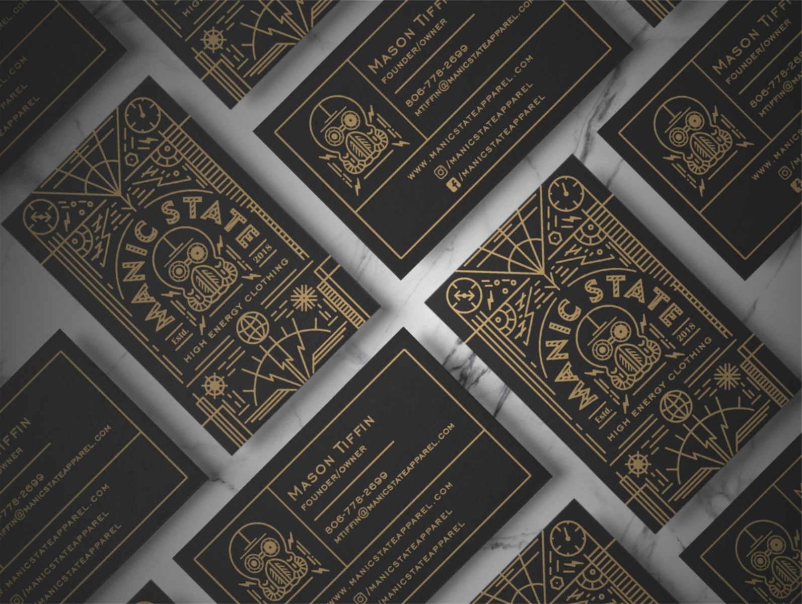
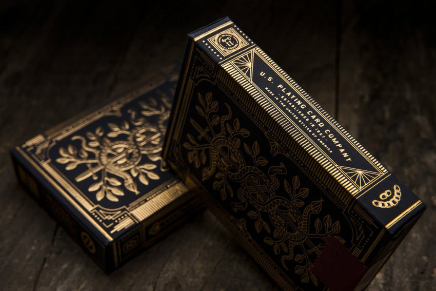
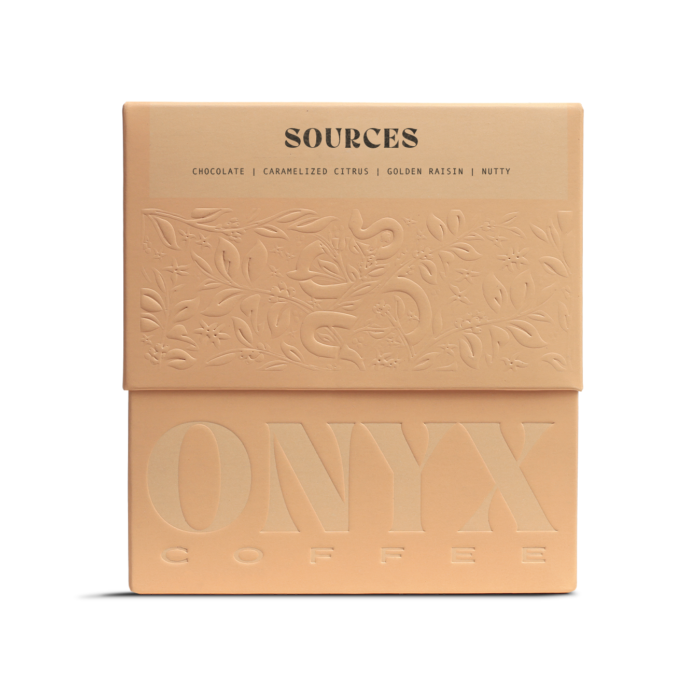
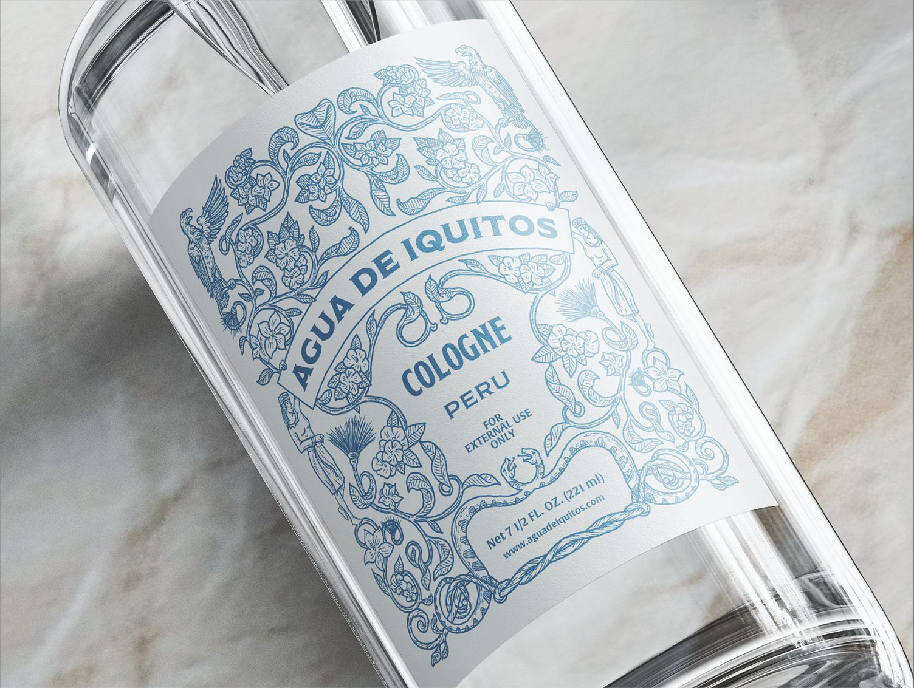
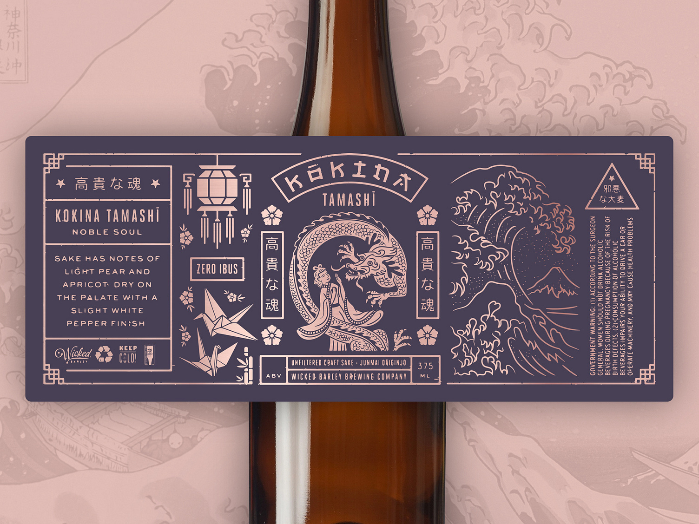
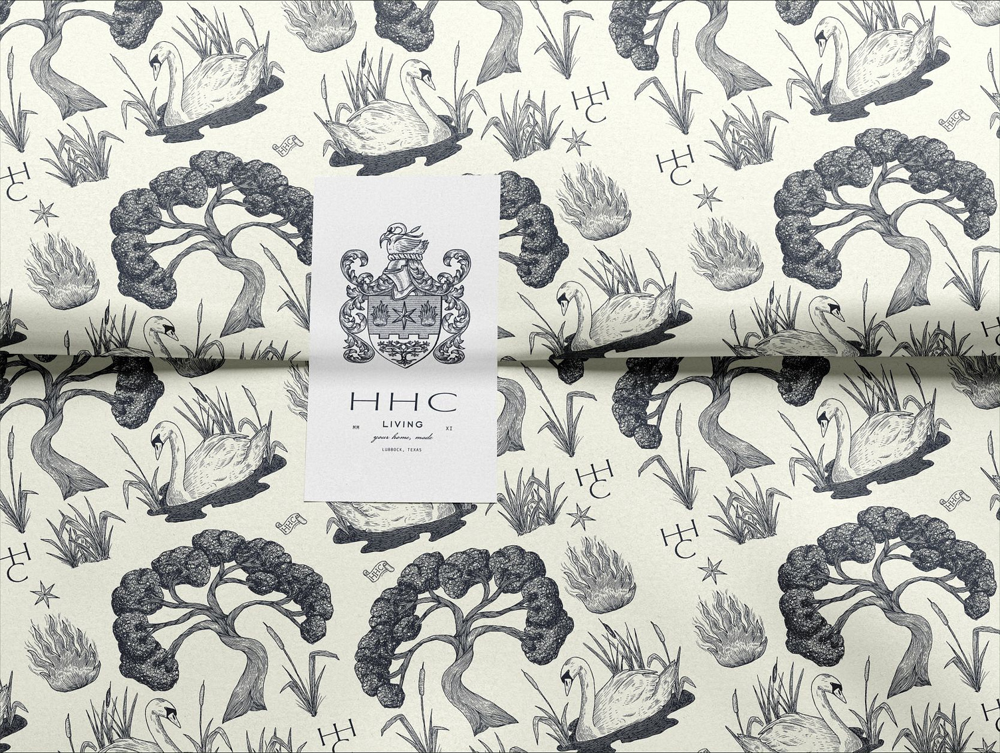
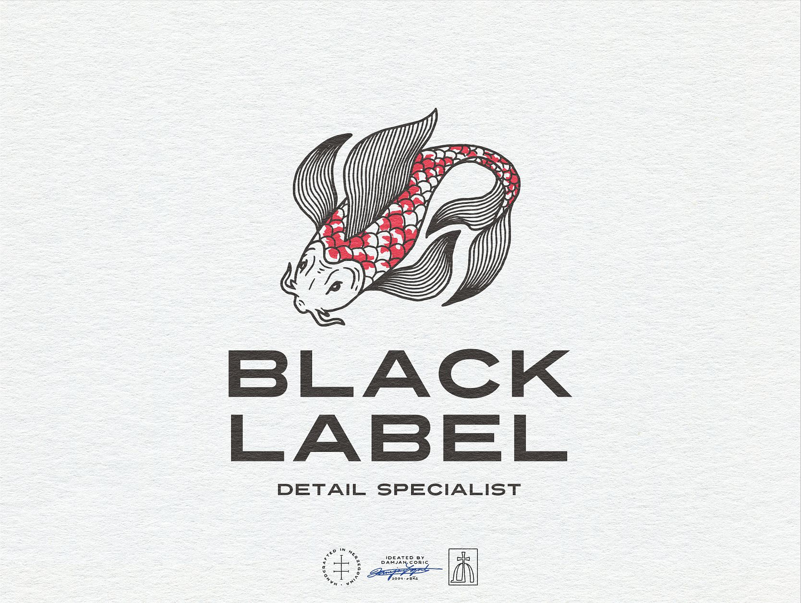
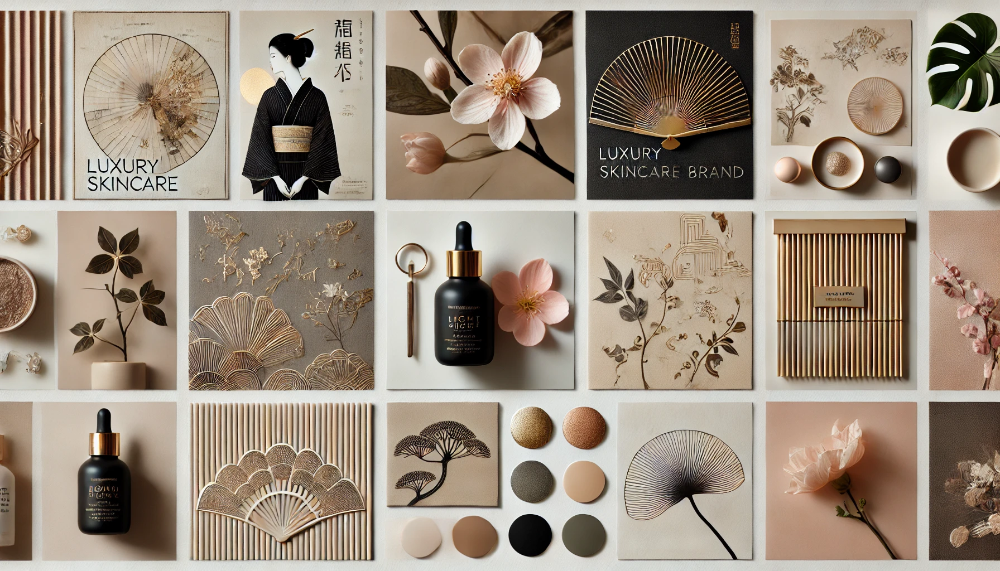
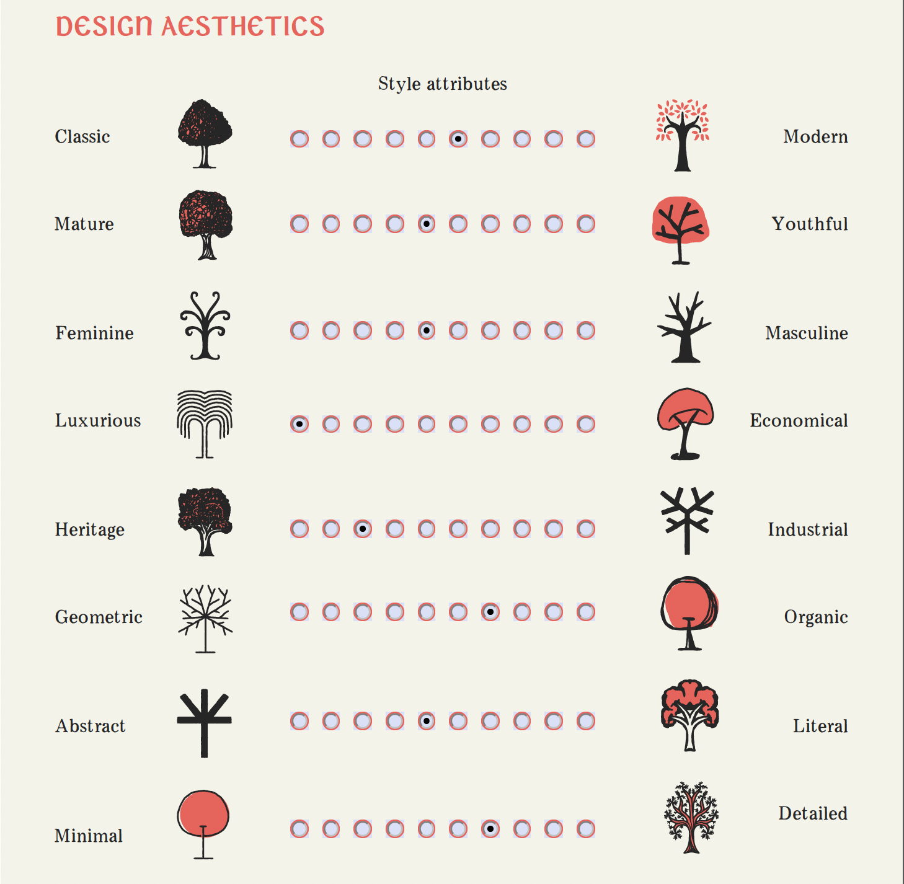

Inspiration Images
Here are images collected on the internet that reflect design and packaging that represents the design language.







Inspired by Japanese culture, Kamakuru was born to bring timeless radiance to skin. At its core is the Yūgen Radiance Complex™—a powerful blend of cherry blossom, yuzu, camellia oil, and natto extract that rejuvenates and illuminates. Kamakuru is an independent, clean beauty, family-owned business on a mission to celebrate Beauty Through Time.
Kamakuru (華間来る): "Arriving Amidst Flowers"
This name represents beauty, elegance, and the journey of graceful aging, capturing the natural and refined approach Kamakuru takes toward skincare.
Beauty Through Time
Our mission is to honor beauty through time.
Inspired by the Japanese concept of yūgen, we believe beauty is profound, subtle, and timeless. True beauty is not about transformation; it’s about revealing and appreciating what already exists. We honor the elegance of simplicity, the power of natural aging, and the moments of quiet beauty that emerge over time. At Kamakuru, beauty is celebrated as a journey, not a destination—a blend of the seen and unseen, enriched by experience and rooted in authenticity.
The Yūgen Radiance Complex™ is Kamakuru’s proprietary blend of cherry blossom, yuzu, camellia oil, and natto extract. Carefully selected for their rejuvenating and illuminating properties, these ingredients come together to reflect the elegance of Japanese culture, enhancing the skin’s innate radiance and embracing beauty as a journey.
Kamakuru is a "feminine neutral" brand, meaning we target primarily women, but would be also be a brand men can identify with. They are aged 35+ who appreciate high-quality skincare and embrace beauty as a lifelong journey. They value quality, cultural authenticity, and ritual, seeking products that reflect their own commitment to elegance, confidence, and mindfulness.
This mood board captures the essence of Kamakuru's elegance, minimalism, and Japanese-inspired aesthetic.
Here are images collected on the internet that reflect design and packaging that represents the design language.
Hopefully the mood board & inspiration images help direct the style we are looking for, but here is feedback from your questionairre.
Product Name: Radiant Blurring Facial Crème
Label Size: 1.75" x 5.5"
Fill: 2oz / 60ml
Description: This crème with Yūgen Radiance Complex™ blurs the lines between anti-aging and daily moisturizer. Helps slow down the appearance of aging and delivers smooth, soft, and subtle feeling skin.
Instructions: Apply 2-3 pumps to clean face in morning and night. Avoid eye area.
Ingredients: Water, Glucomannan (and) Xanthan Gum, Tremella Fuciformis Sporocarp Extract, Bacillus/Soybean Ferment Extract, Water (and) Glycerin (and) Prunus Serrulata Flower Extract, Beta-Sitosterol (and) Sucrose Stearate (and) Sucrose Distearate (and) Cetyl Alcohol (and) Isostearyl Alcohol, Camellia Japonica Seed Oil, Squalane, Glycine Soja (Soybean) Seed Extract, Halorubin, Isopropyl Palmitate, Water (and) Propanediol (and) Citrus Junos Seed Extract, Phenoxyethanol, ethylhexylglycerin, Fragrance
Manufactured: USA
Distribution: Austin, TX